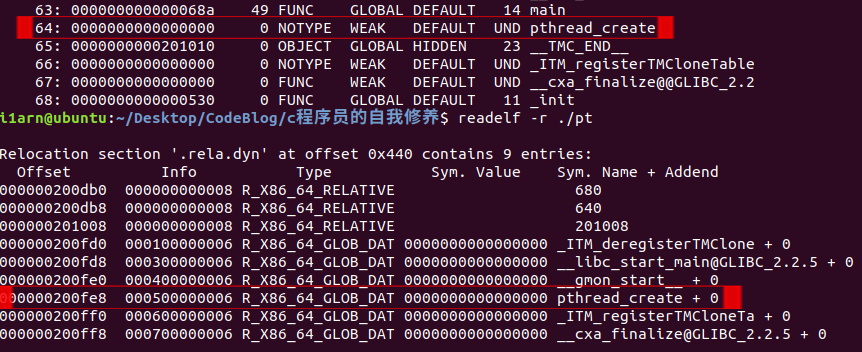
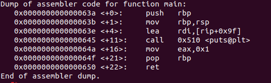

问题
《程序员的自我修养》3.5链接的接口-符号，中提到了弱符号与强符号，弱引用与强引用，针对与书中给出的例程，在实际中出现了完全不同的效果
#include<stdio.h>
#include<pthread.h>
int pthread_create(pthread_t *thread, const pthread_attr_t *attr,
void *(*start_routine) (void *), void *arg) __attribute__((weak));
int main()
{
if(pthread_create)
printf("multi-thread\n");
else
printf("single-thread.\n");
return 1;
}书中给出的编译选项：gcc pthread.c -o pt与gcc pthread.c -l pthread -o pt
原程序编译
问题1 ptread_create始终没有定义
两种编译选项编译之后执行结果都是“single-thread”，pthread_create在符号表中的表现一致

跟换为弱引用编译
int pthread_create(pthread_t *thread, const pthread_attr_t *attr,
void *(*start_routine) (void *), void *arg) __attribute__((weakref));问题1 if判断去了哪里
gcc最终生成的可执行文件中，main函数调用puts函数打印了字符串，if(pthread_create)的判断被“优化”掉了，采用编译选项禁用优化-O0也没有用

问题2 找不到pthread_create符号
最终的执行结果都是“multi-thread”，但是符号表中都未找到pthread_create符号
printf("multi-thread\n，%x"，pthread_create); 我们尝试去打印pthread_create的值，gcc pthread.c -l pthread -o pt能够成功编译，执行打印出pthread_create地址，同时在符号表中也找到了该符号，但是gcc pthread.c -o pt编译出错，显示undefined reference to 'pthread_create'
Comments